Oi, eu queria apresentar o meu cachorro pra vocês. 🐶
Ele é muito importante pra mim, faz parte da minha vida e da minha família. Sempre foi um cachorro alegre, carinhoso e cheio de energia.
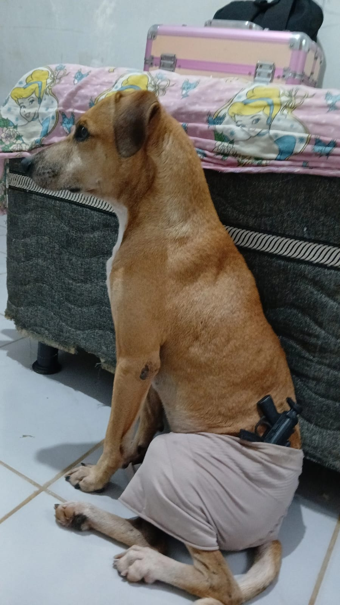
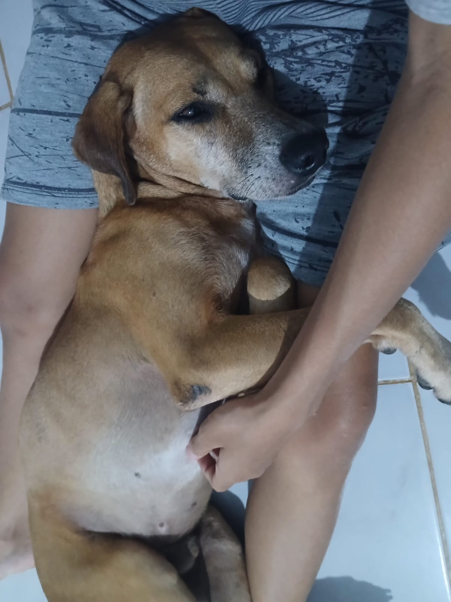
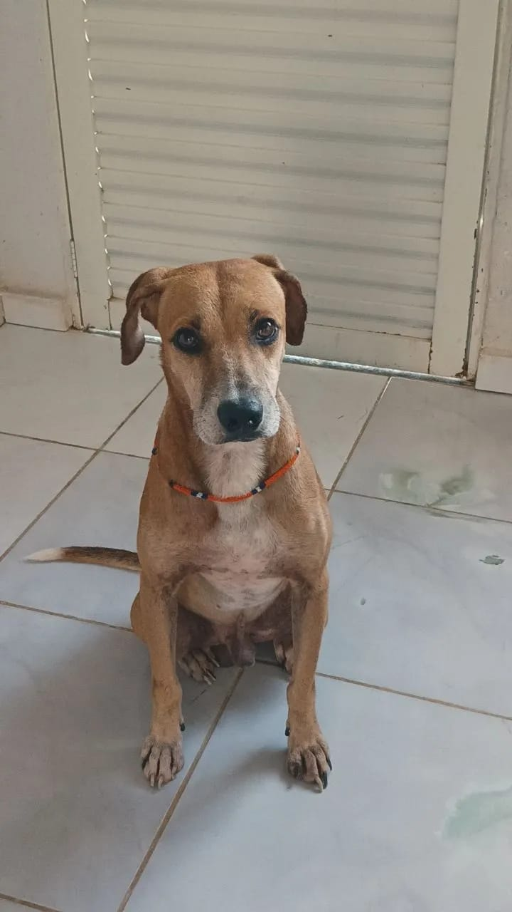
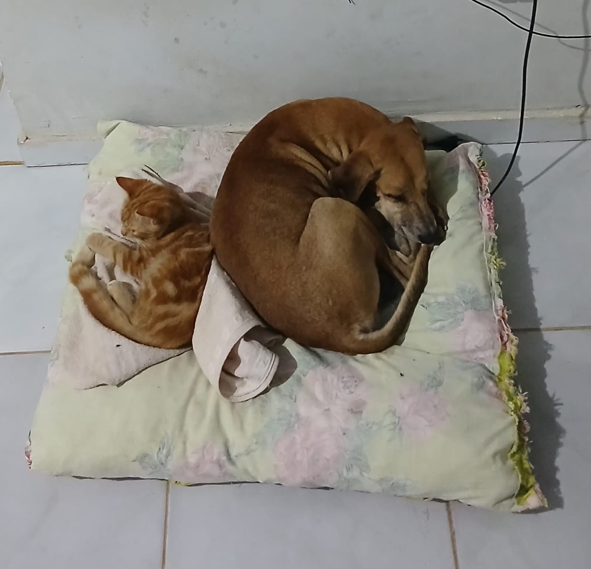
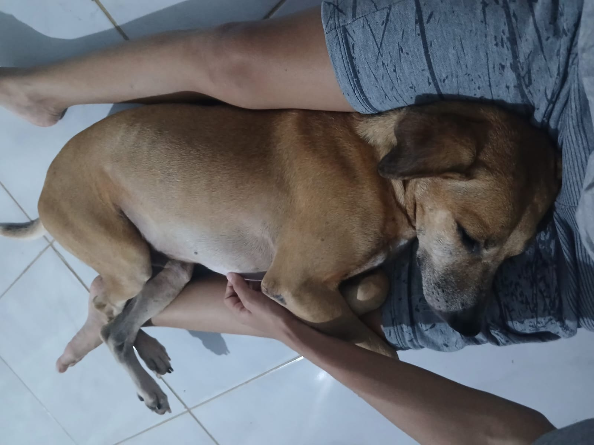
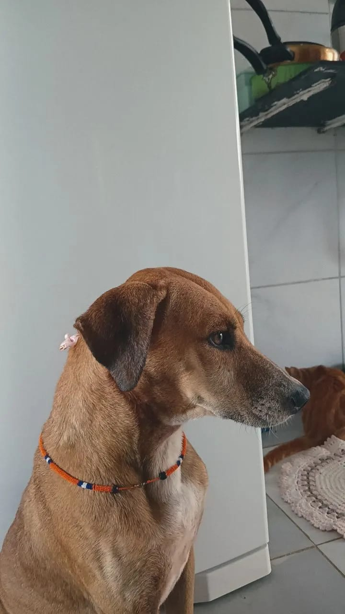
Mas ultimamente a saúde dele tem me preocupado muito, principalmente por causa de um problema na boca que está piorando.
Ele tem cerca de 3 a 4 anos e começou a apresentar muita dificuldade pra mastigar. Na hora de comer, dá pra perceber que ele não consegue mastigar direito, como se estivesse sentindo dor.
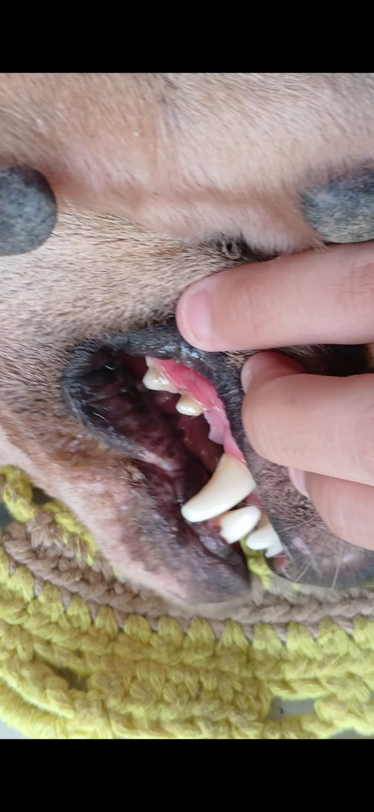
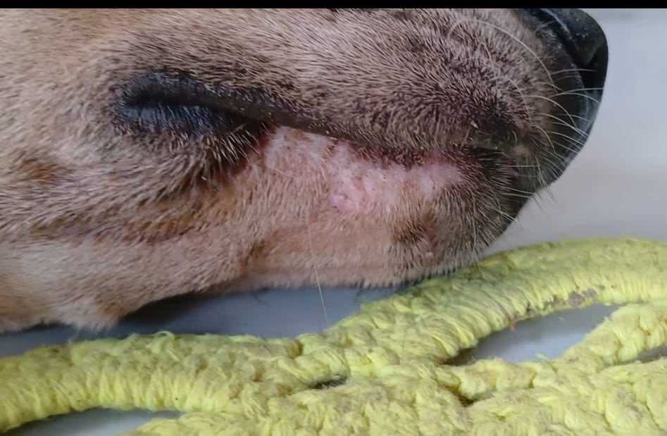
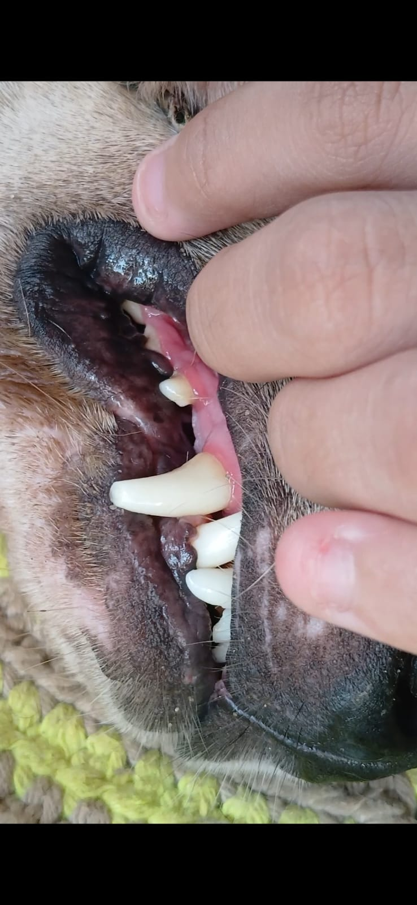
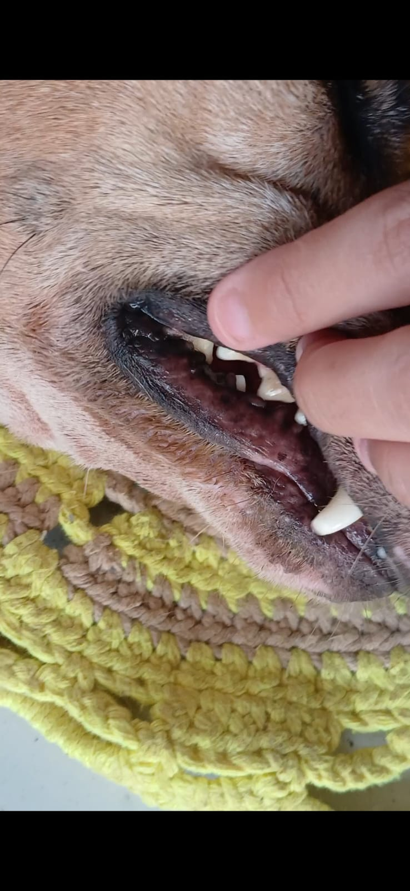
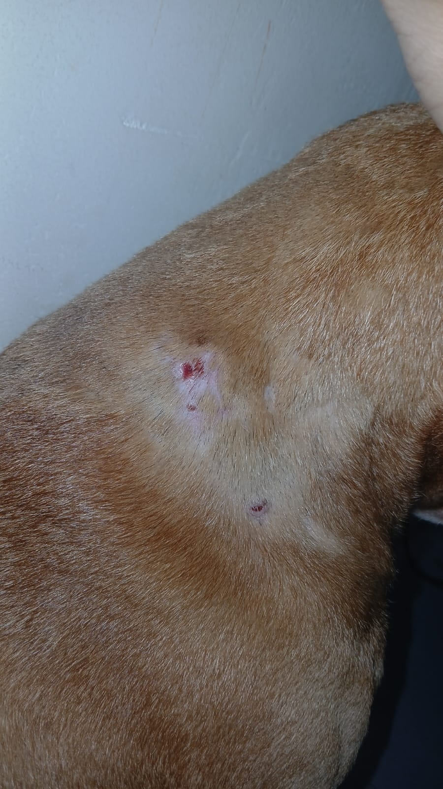
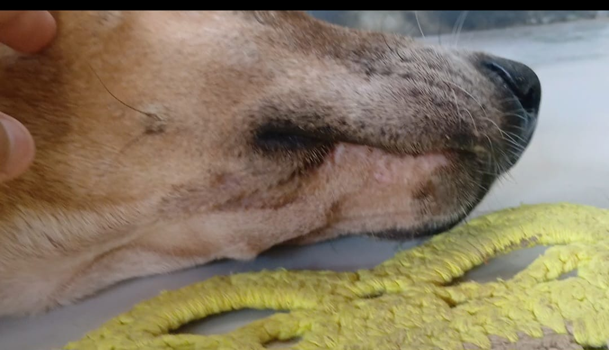
Além disso, ele baba bastante durante a alimentação, o que não é normal e indica que algo não está certo.
Isso tem me deixado muito preocupado, porque problemas na boca podem piorar com o tempo. Ele pode estar com dor constante, alguma infecção ou até algo mais sério que precisa de tratamento urgente.
Também já apareceu um machucado nele sem explicação clara, o que aumentou ainda mais minha preocupação com a saúde dele como um todo.
Infelizmente, no momento eu não tenho condições financeiras de levar ele ao veterinário, mas eu sei que ele precisa de atendimento o quanto antes.
Eu estou pedindo ajuda porque ele realmente precisa. Eu só quero que ele volte a ficar bem, sem dor, conseguindo comer normalmente e vivendo com qualidade de vida.
Muito obrigado por ler e por se importar com o meu cachorro.